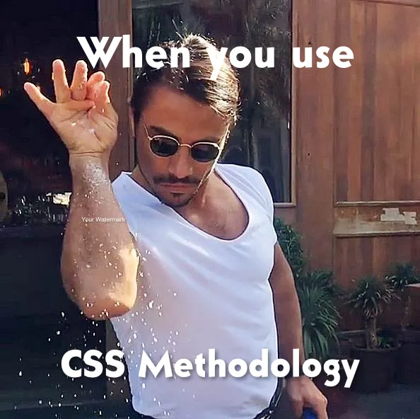
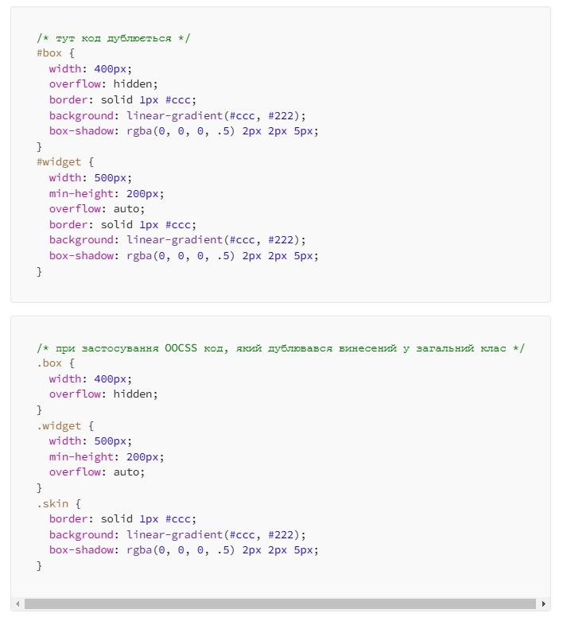

Лекція 14. CSS методології
Лекція 14. CSS методології
План лекції:
- BEM
- SMACSS
- OOCSS (Object-Oriented CSS)
- Atomic CSS

CSS методології
CSS-методології — це підходи до написання CSS-коду, які допомагають структурувати стилі для полегшення
їх підтримки та масштабування.
Особливо корисні для середніх та великих проектів, де легко допустити плутанину в стилях.
Мета — зменшити складність та покращити організацію CSS, щоб код залишався чистим і легко змінюваним.
Навіщо потрібні CSS-методології?
- Уникнення конфліктів стилів: запобігають переписуванню стилів один одним.
- Краща читабельність: забезпечують структурований підхід до написання CSS-коду.
- Покращення продуктивності: дозволяють ефективно повторно використовувати стилі.
- Масштабованість: забезпечують легкість додавання нових компонентів.
Популярні CSS-методології
- BEM (Block, Element, Modifier)
- SMACSS (Scalable and Modular Architecture for CSS)
- ITCSS (Inverted Triangle CSS)
- OOCSS (Object-Oriented CSS)
- Atomic CSS
BEM (Block, Element, Modifier)
- Синтаксис: block, block__element--modifier
- Приклад: .button__icon--active
- Задача: розділяє CSS на блоки, елементи та модифікатори, що дозволяє уникати конфліктів стилів та робить
структуру коду зрозумілішою.
Переваги:
- Добре працює з компонентним підходом.
- Полегшує читабельність.
Недоліки:
BEM (Block, Element, Modifier)
В основі лежить поділ інтерфейсу на незалежні блоки, що дозволяє їх перевикористовувати.
Block — це незалежна одиниця (header, container, menu), що несе семантичне навантаження.
Правильно створена назва блоку відповідає на питання “Що це?” — menu, button і ні в якому разі не описує блок
“Який блок?” — red, big.
Блоки можуть мати необмежену вкладеність.
BEM (Block, Element, Modifier)
Element — складова блоку, що є семантично прив’язана до нього (menu item, list item, checkbox caption). Назва
елемента повинна відповідати на питання “Що це?” — item, text і т.д., та не вказувати стан елементу “Який тип?”,
чи “Який він?” — red, big.
Елементи як і блоки також можуть бути вкладеними, та не обмежуються у рівні вкладеності.
Modifier: Може бути лише частиною елементу й описує його стан, чи поведінку (disabled, highlighted, enabled,
checked).
block-name__element-name--modifier-name, BlockName__ElementName--ModifierName
SMACSS (Scalable and Modular Architecture for CSS)
- Принцип: ділить стилі на 5 категорій: Base, Layout, Module, State, Theme.
- Задача: згрупувати CSS-код за типами для кращої організації та гнучкості.
- Задача: розділяє CSS на блоки, елементи та модифікатори, що дозволяє уникати конфліктів стилів та робить
структуру коду зрозумілішою.
Переваги:
- Гнучкий, адаптується до різних проектів.
Недоліки:
- Може бути складним для новачків.
SMACSS (Scalable and Modular Architecture for CSS)
- Base. До базових відносяться css правила, які застосовуються для нормалізації стилів, а також правила
дефолтних стилів. Для цього використовуються лише теги.
-
Layout. Поділяє сторінку на значні за розміром секції (header, footer, main). Зазвичай правила
застосовуються з використанням ID або класів, зрідка можуть додаватися префікси, наприклад l-(l — ‘layout’).
Лейаут може об’єднувати в себе кілька модулів.
-
Module. Модулем можуть бути частини, які перевикористовуються на сторінці (nav, ul, а також форми для
логування, віджети чи каруселі). Кожен модуль повинен бути створений як самостійна одиниця, що не залежить
від інших. Дозволяється вкладеність.
При створенні css правил для модулів, слід використовувати класи, та уникати використання ID.
SMACSS (Scalable and Modular Architecture for CSS)
-
State. Правила, що описують, як модуль чи лейаут повинен виглядати у певному стані (hover, active і т.д).
Зазвичай додаються префікси is- або ж has-
-
Theme rules. Тут задаються правила, що описують тему сайту (чорно-біла схема, кольорова і т.д.).
Отже, SMACSS пропонує добре організований css розділений логічно на модулі, окремі файли. Однак використання
SMACSS має потенційно слабкі місця, дозволяючи використовувати ID та покладаючись на ланцюжок селекторів для
стану.
ITCSS (Inverted Triangle CSS)
- Принцип: побудова стилів за ієрархією від глобальних стилів до специфічних.
- Задача: забезпечує кращу структуру стилів з чітким рівнем пріоритету.
Переваги:
- Легше керувати стилями у великих проектах.
Недоліки:
- Складний для налаштування і підтримки на початку.
ITCSS (Inverted Triangle CSS)
ITCSS ділить стилі на декілька рівнів, які організовані у вигляді перевернутої піраміди. Стилі на верхніх рівнях
застосовуються до всього сайту, а чим нижче по ієрархії, тим більш специфічні та локалізовані стилі стають.
Рівні виглядають приблизно так:
- Settings: змінні, кольори, шрифти (не містять реальних стилів).
- Tools: міксіни, функції (можуть використовуватися на всіх наступних рівнях).
- Generic: глобальні скидання стилів, нормалізація.
- Elements: базові стилі HTML-елементів (h1, p, a).
- Objects: невеликі, багаторазові структури (наприклад, медіа-об'єкти).
- Components: стилі для конкретних компонентів (картки, кнопки).
- Utilities: специфічні стилі, які можуть переписувати все вище (класові стилі типу .text-center,
.float-left).
OOCSS (Object-Oriented CSS)
- Принцип: відокремлення структури та вигляду.
- Задача: заохочує використання повторно використовуваних CSS-«об'єктів».
Переваги:
- Полегшує створення гнучких компонентів.
Недоліки:
- Вимагає багато класів, що може заплутати.
OOCSS (Object-Oriented CSS)
Об’єкто-орієнтована методологія css має багато спільного з ООП (об’єкто-орієнтованим програмуванням), оскільки
підхід передбачає створення дефолтних об’єктів.
Обє’кто-орієнтований css був запропонований Ніколь Салліван (Nicole Sullivan), для того, щоб зробити динамічний
css більш зручним у користуванні.
OOCSS (Object-Oriented CSS)
OOCSS має два основні принципи:
-
Separate structure and skin — відокремлення структури від оболонки. Відокремлення візуальних особливостей
(width, height, margins, paddings та ін.) як окремих оболонок, що можна використовувати в будь-якій
варіації.
-
Separate container and content — відокремлення контенту від контексту. Це значить рідко використовувати
залежність від локації. Об’єкт що використовується повинен виглядати однаково будь-де.
OOCSS дарує девелоперам майже цілковиту свободу при створенні класів. Проте це є і мінусом. Відсутність правил і
консистентності призводить до збільшення кількості варіацій класів.
OOCSS (Object-Oriented CSS)

Atomic CSS
- Принцип: кожен клас представляє одну властивість CSS (наприклад, .text-center, .bg-blue).
- Задача: забезпечує гнучкість і легкість змін стилів без додаткових CSS-файлів.
Переваги:
- Прискорює розробку, зменшує об'єм CSS.
Недоліки:
- Стилі можуть бути складні для читання та підтримки.
Якщо коротко описати, то методологія зводиться до простого твердження “одне правило — для одного стилю”
Переваги та недоліки CSS-методологій
Переваги:
- Краща організація коду.
- Збільшена масштабованість.
- Легке управління стилями.
- Зменшення конфліктів стилів.
Недоліки:
- Збільшення кількості класів.
- Потрібен час для навчання і адаптації.
- Деякі методології можуть бути складними у використанні.
HTML, CSS workflow
1. Підготовка та планування
- Аналіз макета: детально розгляньте макет сторінки (наприклад, у Figma або Photoshop), визначте основні
блоки, компоненти та стилі.
- Планування структури: продумайте HTML-структуру та CSS-методологію (наприклад, BEM, ITCSS), яку будете
використовувати.
- Вибір інструментів: вирішіть, чи будете використовувати препроцесори (Sass, LESS), CSS-фреймворки
(Bootstrap, Tailwind) або системи зборки (Webpack, Vite).
HTML, CSS workflow
2. Налаштування робочого середовища
- Створення структури проекту: підготуйте базові папки (css, js, images, fonts тощо).
- Підключення базових файлів: створіть і підключіть базові файли стилів (main.css, reset.css або
normalize.css), а також основний HTML-файл.
- Налаштування системи контролю версій: ініціалізуйте Git-репозиторій для відстеження змін та командної
роботи.
3. Базова HTML-структура
- Створення семантичної розмітки: розмістіть основні блоки за допомогою семантичних тегів (header, main,
section, footer тощо).
- Розбивка на компоненти: для SPA або проектів з компонентною архітектурою створіть окремі файли чи шаблони
для кожного компонента.
HTML, CSS workflow
4. Базові стилі та скидання стилів
- Скидання стилів: додайте reset.css або normalize.css, щоб зробити відображення стилів у різних браузерах
однаковим.
- Налаштування змінних: у файлі налаштувань (settings.scss) задайте основні змінні — кольори, шрифти,
відступи, брейкпоінти для медіа-запитів.
5. Створення основних блоків (глобальні стилі)
- Глобальні стилі для елементів: стилізуйте базові елементи (body, h1-h6, p, a, button).
- Формування контейнерів: створіть стилі для основних контейнерів, наприклад .container, .wrapper, для
вирівнювання та центрування контенту.
HTML, CSS workflow
6. Розробка компонентів та модулів
- Початок з верхніх блоків: почніть з верстки header, footer, меню навігації та інших глобальних елементів.
- Стилізація компонентів: переходьте до верстки компонентів (картки, кнопки, форми) з урахуванням обраної
CSS-методології.
- Медіа-запити для адаптивності: при створенні стилів для кожного компонента одразу додавайте медіа-запити для
адаптації під різні екрани.
7. Розмітка та стилізація контентних блоків
- Основний контент: після компонентів переходьте до стилізації основних блоків контенту (наприклад, блоків з
текстом, зображеннями, відео).
HTML, CSS workflow
8. Тестування та налагодження
- Тестування в браузерах: перевірте верстку у різних браузерах (Chrome, Firefox, Safari, Edge) та на різних
пристроях.
- Тестування на адаптивність: переконайтесь, що сайт виглядає коректно на мобільних, планшетах та десктопах.
- Виправлення помилок: налагодьте проблеми з версткою, якщо вони виникають на певних розмірах екрану чи в
конкретних браузерах.
9. Оптимізація та фінальні правки
- Оптимізація зображень: стискайте зображення для прискорення завантаження сторінок.
-
Тестування продуктивності: перевірте швидкість завантаження сторінки за допомогою інструментів, таких як
Google PageSpeed Insights або Lighthouse.
-
Оптимізація CSS: мінімізуйте CSS, видаліть зайві стилі або неактивний код.